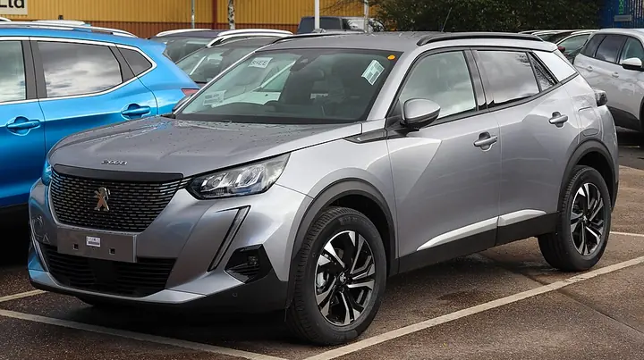

Peugeot 2008
Second generation (P24; 2019) · 2019–present
Abstract
This generation of the Peugeot 2008 was built 2019–present in Spain: Vigo (Vigo Plant), Argentina: El Palomar, China: Wuhan (DPCA) and other plants. Designed by Sandeep Bhambra.


Figures of the current version from the manufacturer: Peugeot 2008 price list and specifications (France), 2026-03-02.
1Specifications
| Trim levels | StyleAllureGTGT Exclusive |
|---|---|
| Production | 2019–present2019–2024 (China)2024–present (Argentina) |
| Assembly | Spain: Vigo (Vigo Plant)Argentina: El PalomarChina: Wuhan (DPCA)Pakistan: Karachi (Lucky Motor Corporation)Malaysia: Gurun (Gurun Plant)Vietnam: Chu Lai (THACO) |
| Designer | Sandeep Bhambra |
| Platform | CMP/eCMP |
| Engine | Petrol:Turbo 100 ch, 6-speed manualHybrid:Hybrid 110 ch e-DCS6Hybrid 145 ch e-DCS6Electric:Électrique 156 ch, 54 kWh battery |
| Electric motor | Permanent magnet synchronous motor (e-2008) |
| Transmission | 6-speed manual8-speed Aisin EAT8 automatic1-speed direct-drive (e-2008) |
| Battery | 50 kWh |
| Electric range | 399–406 km WLTP |
| Wheelbase | 2605 mm |
| Length | 4304 mm |
| Width | 1815 mm |
| Height | 1550 mm |
| Related | Peugeot 208 IIDS 3 IICitroen C4 IIIOpel Mokka BJeep AvengerFiat 600Alfa Romeo JuniorOpel Corsa FLancia Ypsilon IVIKCO Reera |
2Versions
- ICE versions
- Electric version
- Facelift (2023)